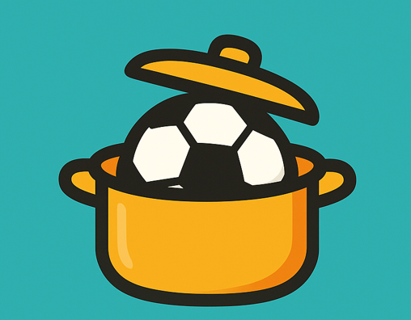

 Bem-vindo ao Panelinha de Futebol (Boleiros)
Cadastro
Times
Partidas
Histórico
BOLEIROS (controle de times)
Cadastro de Jogadores
Nome:
Apelido:
Telefone:
Incluir Jogador
Jogadores Cadastrados
Formação Aleatória de Times
Selecione os jogadores para o sorteio:
Jogadores por time:
Criar Times Aleatórios
Times na Fila
Vamos Jogar!
Início e Controle de Partidas
Jogo 1
Duração do jogo (minutos):
00:00
Iniciar
Pausar
Encerrar
Adicionar Jogador à Partida
Encerrar Dia de Jogo
Próximos Jogos
Histórico do Jogo
Jogo
Partida
Vencedor
Duração
Adicionar Jogador à Partida
Selecionar Jogador Existente:
-- Selecione ou Cadastre um Novo --
OU
Cadastrar Novo Jogador
Nome:
Apelido:
Telefone:
Adicionar
Voltar